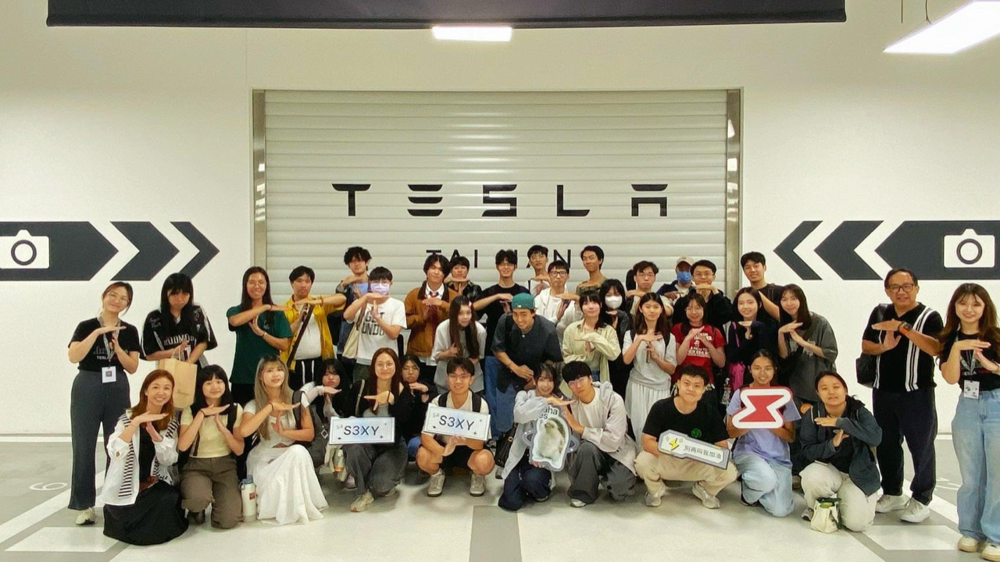

強化 ESG 影響力
支持地方青年教育與機會平權，並以結案影響力報告，讓社會投入成為可揭露、可累積的永續成果。
For Companies
企業與基金會合作
與鄉育合作，企業與基金會同時做兩件事：以公益捐款或聯合計畫支持地方青年培力，並在這些青年真正進入職場之前，就更早接觸他們——這些人才經過真實專案的歷練，具備定義問題、整合資源並推動成果的能力。

合作價值
鄉育以「公益捐款支持」作為合作的基礎，並把每一份投入轉化為可被看見的影響力。無論是企業或基金會，這都不只是一筆贊助，而是一套同時服務永續責任、人才布局與品牌連結的合作關係。
支持地方青年教育與機會平權，並以結案影響力報告，讓社會投入成為可揭露、可累積的永續成果。
青年在 PBL 真實專案中歷練問題解決與團隊協作，搭配企業導師制度回饋實作成果，企業得以更早認識具備能力證據的人才。
透過官網企業專區露出、校園品牌專場講座與媒體合作曝光，讓品牌在青年世代心中與「支持成長」產生連結。
合作模式
四個級距由淺入深，較高級距包含較低級距的全部內容。金額與回饋方案可依企業或基金會的實際情況協商調整；基金會也歡迎以聯合計畫、共同補助等方式，與我們客製專屬的合作模式。歡迎來信或來電洽談。
合作流程
合作不是一次性的捐贈，而是一段共同推進的歷程。從合作洽談、方案規劃到影響力回饋，每一步都和貴單位一起確認方向，讓投入真正回到一個個具體的青年身上。
Step 01
來信或來電說明合作目標與 ESG、人才或品牌需求，我們安排一次對談，了解貴單位的期待與可投入的資源。
Step 02
依目標量身規劃合作層級、回饋內容與時程，並確認以公益捐款或聯合計畫進行的合作方式與權益。
Step 03
確認合作備忘錄與捐款方式後正式啟動，依方案安排校園品牌專場、企業導師、專案命題或人才媒合等行動。
Step 04
計畫結束後提供結案影響力報告，讓投入成為可揭露、可累積的永續成果，並一起討論下一階段的合作。
企業案例
想知道一份公益投入最終回到誰身上？從合作夥伴、學習成果到青年的真實故事，這些都是企業與基金會合作可以看見的具體成果。（具名企業合作案例與品牌標誌，將於取得授權後陸續公開。）
常見問題
以下整理了企業與基金會在洽談合作前常見的疑問。若有未列出的疑問，歡迎與我們聯絡。
沒有硬性的最低門檻。合作的形式、深度與投入金額，會依貴單位的目標與可投入的資源，在洽談中一起討論決定。無論規模大小，都歡迎先與我們聊聊，再找出最適合的合作方式。
可以。支持地方青年教育與機會平權，能成為企業 ESG、基金會 USR 等永續投入的一環，並可透過結案影響力報告呈現可揭露、可累積的成果。不過我們不替企業保證稅務或會計上的認列方式，相關認定請以貴單位的會計師或主管機關意見為準。
合作大致依「合作洽談、方案規劃、簽約啟動、影響力回饋」四個步驟進行，詳見上方合作流程。實際的時程與週期會依合作形式而定，會在方案規劃階段與貴單位一起確認，讓每一步都對齊雙方的期待。
可以。除了由淺入深的合作級距外，回饋內容、專案命題與合作方式都能依貴單位的產業特性與需求調整；基金會也歡迎以聯合計畫、共同補助等方式，與我們客製專屬的合作模式。歡迎在洽談時提出您的構想。
這些青年多為高中與大專院校學生，經過 16 週職涯探索選修課程的真實專案歷練，培養出定義問題、整合資源與推動成果的能力，並留下成長履歷與能力證據。想了解他們具備什麼樣的能力輪廓，可參考學習成果。
洽談窗口
歡迎直接來信或來電洽詢，我們會由專責同仁與您聯繫，依貴單位的目標安排後續對談。
除了企業與基金會合作，鄉育也提供捐款支持、學校共備與成為支持者等多種參與方式，歡迎一起為青年尋路。